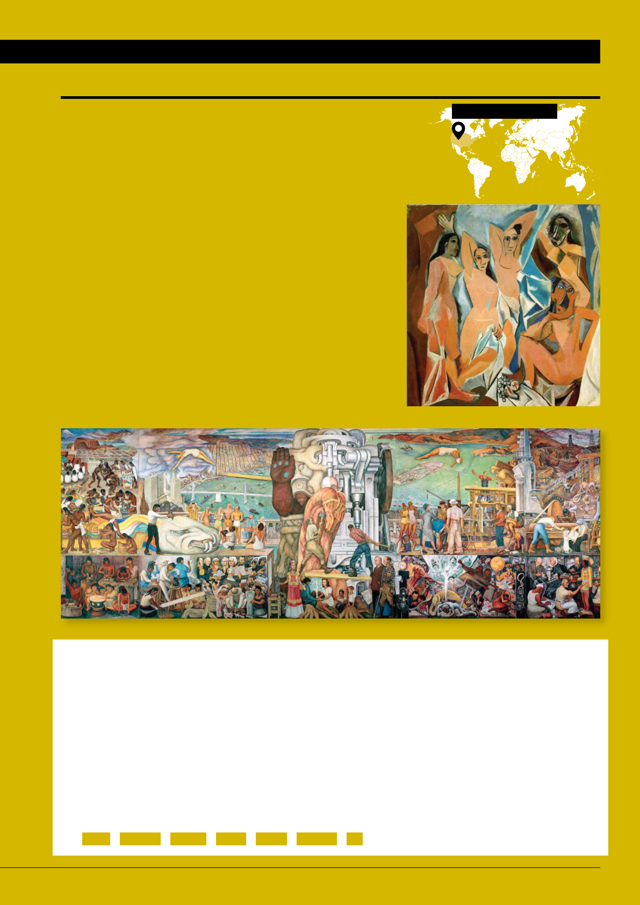
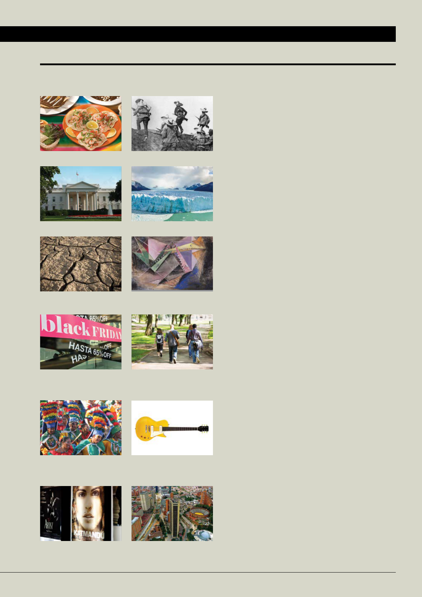

PERSONAS
In this chapter, you will learn
how to introduce yourself and
write a text, or piece of writing
for an online platform.
CAPÍTULO 1
1
LEARNING OUTCOMES
` Introduce yourself and
others
` Exchange personal
information (I)
VOCABULARY
` Activities to learn
a language
` Interesting topics in a
Spanish course
LANGUAGE STRUCTURES
` Subject pronouns
` Present tense of regular
verbs
` The verbs llamarse and ser
` Nouns and articles
ORAL AND WRITTEN TEXTS
` Communication resources
in the Spanish classroom
` Basic politeness
` How to create a text
SOUNDS
` Alphabet and sounds
CULTURE
` Linguistic landscape (USA)
` Hispanic artistic heritage in
the United States
PROJECTS
` Group: introduce yourselves
to the class
` Individual: introduce
yourself in writing on an
online platform
To ask:
¿Cómo te llamas?
¿Cuál es tu apellido?
¿Qué estudias?
ATENCIÓN
To introduce yourself:
(Yo) soy Brendan. = (Yo) me llamo Brendan.
Soy estudiante de primero.
Me llamo es Brendan.
Mi nombre es Brendan.
ATENCIÓN
To greet:
¿Qué tal?
Buenos días.
Buenas tardes.
Buenas noches.
ATENCIÓN
1. Fill out this form with your personal information.
PREPÁRATE
EN LA RED
2. Complete this introduction and then introduce
yourself to the class.
1. (Yo) me llamo
2. (Yo) soy estudiante de
¤
Hola. (Yo) me llamo Brendan Kruger.
Soy estudiante de primer año.
3. Write down the information of two other students in the class.
Estudiante 1
1. (Él/Ella) se llama
2. Es estudiante de
Estudiante 2
1. (Él/Ella) se llama
2. Es estudiante de
Estudiante de primer año Freshman
Estudiante de segundo año Sophomore
Estudiante de tercer año Junior
Cuarto año Senior
Otros Other
Semestre Semester Trimestre Term-Quarter
de otoño (Fall) de invierno (Winter) de primavera (Spring) de verano (Summer)
PROMOCIÓN CLASS
APELLIDO LAST NAME
NOMBRE FIRST NAME
UNIVERSIDAD COLLEGE, UNIVERSITY
CURSO ACADÉMICO ACADEMIC YEAR
CORREO ELECTRÓNICO E-MAIL
LUGAR DE ORIGEN PLACE OF ORIGIN
PARA EMPEZAR CAPÍTULO 1
3
TALK ABOUT PROFESSIONS
ser + nombre
Sofía es estudiante.
TALK ABOUT ORIGIN
ser de + lugar
Mark es de EE. UU.
ASK ABOUT ORIGIN
¿De dónde es Sophia?
ATENCIÓN
Sophia
Kansas
Estudiante de español
Marta
Sevilla
Profesora de español
Nat
Nueva York
Estudiante de cine
Emma
Santa Bárbara
Estudiante de biología
IMÁGENES
4. Four people are sharing photos of famous landmarks in their hometowns.
In pairs, match the name of each landmark with its corresponding photo.
Esto es el puente / la playa de…
El puente de Brooklyn La Giralda de Kansas City La playa de Santa Bárbara La Giralda de Sevilla
5. Use the information provided to write an introduction for each person.
PALABRAS CLAVE
7. Carefully read this list of academic departments and programs. Which English cognates do you
recognize? In groups, look up the words you don't recognize in the dictionary.
8. What are you studying this semester? Complete the sentence and share with your classmates.
Este semestre estudio (I'm studying)
Es de Estados Unidos/Illinois…
Es estudiante de…
Es profesor(a) de…
Antropología
Biología
Ciencias de la Computación
Cine
Danza
Derecho
Derechos Humanos
Educación
Economía y Finanzas
Escritura creativa
Estadística
Estudios Asiáticos
Estudios Latinoamericanos
Farmacia
Genética
Historia
Inglés
Ingeniería
A
B
C
D
E
F
G
H
I
Lingüística
Literatura Comparada
Mercadotecnia
Matemáticas
Medicina
Negocios
Neurociencia
Oftalmología
Periodismo
Psicología
Química
Relaciones Internacionales
Sociología
Salud
Teatro
Urbanismo
Veterinaria
Zoología
L
M
N
O
P
Q
R
S
T
U
V
Z
PARA EMPEZAR CAPÍTULO 1
CLASSROOM COMMUNICATION
¿Qué significa Derecho? (What
does Derecho mean?)
Significa Law. (It means Law.)
¿Cómo se dice Chemistry
en español? (How do you say
Chemistry in Spanish?)
Chemistry se dice Química.
(Chemistry in Spanish is
Química.)
ATENCIÓN
6. Find a photo from your hometown and explain where you are from.
(Yo) soy de Seattle. Esto es el Fish Market.
Sophia es de Kansas. Es estudiante de español.
¤
Antropología es 'Anthropolog', ¿no?
4
PARA EMPEZAR CAPÍTULO 1
VIDEO: HOLA, SOY MARCELA
9. Watch the video. At which university are these three people studying? In which country?
Estudian en…
10. Watch the video again and match this information with the three interviewees.
Jason Montevideo (Uruguay) Santiago de Chile (Chile) Daniela Marcela
Producción un doctorado en Historiografía Cultural Letras Hispánicas Pasto (Colombia)
PREPÁRATE
1
1
Se llama
Es de
Estudia
Se llama
Es de
Estudia
Se llama
Es de
Estudia
11. The favorite words of these three people are coraje, utopía, and playa. Find the
meaning of each in a dictionary and write it down.
12. Write down a word that you know in Spanish, along with its meaning.
What is your favorite word
in English? Why?
LA CAFETERÍA
13. In pairs, compare your answers to activities 9, 10 and 11.
14. In groups, share the words that you wrote in activity 12.
VIDEO
TRANSCRIPCIÓN
Género:
Entrevista
País:
México
Año:
2019
4 5
1 uno
2 dos
3 tres
4 cuatro
5 cinco
6 seis
7 siete
8 ocho
9 nueve
10 diez
11 once
12 doce
13 trece
14 catorce
15 quince
16 dieciséis
17 diecisiete
18 dieciocho
19 diecinueve
20 veinte
ATENCIÓN
DOCUMENTOS PARA DESCUBRIR
NUESTROS TEMAS
CON
PROYECTOS
LOS
ESTUDIANTES
HABLAN,
LEEN Y
ESCRIBEN
SOBRE...
→ la literatura en español
→ la mercadotecnia y la
publicidad
→ la geografía del mundo
hispano
→ la historia del mundo
hispano
→ la política
→ los problemas del
medioambiente
→ la gastronomía hispana
→ el arte
→ las tradiciones y las
celebraciones del mundo
hispano
→ las redes sociales
→ el español como lengua
internacional
→ la vida de los estudiantes
universitarios
15. Look at these photos and read about the topics included
in Proyectos. Write the topic that corresponds with each
photo.
1.
la gastronomía
2.
3.
4.
5.
6.
7.
8.
9.
10.
11.
12.
16. In groups, compare your answers to activity 15.
17. In groups, take turns sharing which themes interest you.
Follow the model.
Para mí, es interesante la política.
Para mí, son interesantes las tradiciones.
18. Three students of Spanish talk about the topics that are
important to them. Write them down.
1. Mike:
2. Kathy:
3. Bill:
19. In groups, what other topics interest you?
Find photos and prepare a presentation
about the topics you choose.
¤
—Para mí, son interesantes los problemas del medioambiente.
—Pues, para mí, la gastronomía.
6
→ LAS CIUDADES
NUESTROS TEMAS
→ LA MÚSICA
DOCUMENTOS PARA DESCUBRIR
NUESTROS TEMAS
CAPÍTULO 1
3 4
5
9
10
11
12
TEXTO MAPEADO
TEXTO LOCUTADO
AUDIO
TRANSCRIPCIÓN
6
21
6 7
7
8
ENTENDER CÓMO FUNCIONA LA LENGUA
20. Look at the photos and read the conversations. Then fill out the table with the correct subject pronouns.
PREPÁRATE
LAS PERSONAS DEL VERBO
GRAMÁTICA
— Buenos días, yo soy Ana, ¿tú eres…?
— Yo soy Arturo, encantado.
— Hola, soy Marta, ¿ustedes son también estudiantes
de segundo año?
— Sí, somos de segundo; yo soy Carlos y ella es Estela.
— ¡Encantada! ¿Son de aquí, de Bogotá?
— Yo sí, pero Carlos, no; él es de Cali.
— Hola, ¿ustedes son estudiantes de primer año?
— No, nosotras somos de segundo año, pero ellos sí,
ellos son de primer año.
— ¿Son estudiantes de segundo año?
— No, nosotras somos de primer año.
— Nosotros sí, nosotros somos de segundo.
— ¿Ustedes son de la Universidad de Chile?
— No, nosotros somos de la Universidad de
Valparaíso, pero ellas sí, ellas son de la Universidad
de Chile.
— Buenos días, ¿usted es el nuevo (new) profesor
de Español?
— Sí, y usted es la profesora de Economía, ¿no?
pronombres SER
soy
eres
es
somos
vosotros/as
sois
son
Vosotros is the plural form of you. It is
used exclusively in Spain. The rest of the
Spanish-speaking world uses ustedes:
—¿Vosotros sois de Barcelona?
—Él sí, pero yo soy de Madrid.
ATENCIÓN
8
encantado/a: pleased to meet you
también: also
ENTENDER CÓMO FUNCIONA LA LENGUA CAPÍTULO 1
LAS PERSONAS DEL VERBO
GRAMÁTICA
Reflecting on your
own language activates
knowledge that you can
apply when learning a
new language.
ESTRATEGIAS
21. In pairs, compare your answers to activity 20.
22. In groups of two, three, or five, choose one of the scenes in
activity 20 and perform it using your own information.
– Hola, soy Mark, ¿ustedes son también
estudiantes de primer año?
–Sí, somos de primero; yo soy Anna y ella es Tricia.
–¡Encantado! ¿Son de aquí, de Los Ángeles?
–Yo sí, pero Tricia, no; ella es de Nueva York.
23. In pairs, write the English pronoun that corresponds
to each pronoun in Spanish.
1. yo:
2. tú:
3. usted:
4. él:
5. ella:
6. nosotros:
7. nosotras:
8. vosotros:
9. vosotras:
10. ellos:
11. ellas:
12. ustedes:
¤
— Nosotros es 'we', ¿no?
— Sí, y nosotras también.
24. In groups, read the statements on pronouns and say whether they refer to Spanish or
English. Then write the pronouns.
1. There are 12 subject pronouns in this language.
Spanish. Yo, tú, él, ella, usted, nosotros,
nosotras, vosotros, vosotras, ellos, ellas, ustedes.
2. There's one pronoun that has the same form in the singular and plural.
3. There are 7 subject pronouns.
4. In this language, there is one masculine subject pronoun and one feminine subject
pronoun.
5. In this language, there are four subject pronouns with a masculine form and four with a
feminine form.
8 9
GÉNERO Y NÚMERO
GRAMÁTICA
Do you think languages
can be sexist?
LA CAFETERÍA
25. Identify and mark the gender and number of these nouns referring to people.
Write other examples in your notebook.
Masculino
singular
Femenino
singular
Masculino
o femenino
plural
Masculino
plural
Femenino
plural
-o/-a
El compañero
La compañera
Los compañeros
Las compañeras
-e
Los estudiantes
Las estudiantes
El estudiante
La estudiante
-or/
-ora
El profesor
Las profesoras
La profesora
Los profesores
26. Mark the gender and number of these nouns referring to things. Then add two more nouns.
Masculino
singular
Femenino
singular
Masculino
plural
Femenino
plural
La clase
Las clases
El libro
Los libros
La playa
Las playas
La actividad
Las actividades
PREPÁRATE
27. Compare your answers to activities 25 and 26 with a partner. Then find other examples
of nouns in this chapter and identify their gender and number together.
ENTENDER CÓMO FUNCIONA LA LENGUA
In Spanish, the masculine plural form is used to refer to
groups including both masculine and feminine nouns:
los compañeros = los compañeros + las compañeras
Some people prefer to use alternatives such as:
compañeros y compañeras or, when writing, lxs
compañerxs / l@s compañer@s: los compañeros + las
compañeras
ATENCIÓN
10
28. Match these verbs with their corresponding icons.
1. escuchar
2. leer
3. hablar
4. escribir
5. trabajar
29. Match the activities with the photos.
1. escuchar audios
2. leer libros
3. hablar en español
4. ver videos
5. trabajar en grupos
6. trabajar en parejas
7. escribir correos
(e-mails)
8. escribir textos
PREPÁRATE
ACTIVIDADES DE MI CLASE DE ESPAÑOL
VOCABULARIO Y GRAMÁTICA
Las islas
Galápagos
La geografía
La salsa
La música
El ceviche
La gastronomía
Guillermo del Toro
El cine
La independencia
de Puerto Rico
La historia
y la política
Miguel Cabrera
El deporte
El carnaval de
Barranquilla
Las tradiciones y
las celebraciones
Cartagena de
Indias
Las ciudades
Pablo Picasso
El arte
TEMAS DEL CURSO
DE ESPAÑOL
HOLA A
TODOS, ME LLAMO
VICTORIA.
B C D E A
ENTENDER CÓMO FUNCIONA LA LENGUA CAPÍTULO 1
30. Compare your answers to activities 28 and 29 with a classmate.
TEMAS DEL CURSO DE ESPAÑOL
31. Work in groups to complete the table. What do you know about the Spanish-speaking world in relation to these
topics? You may use a dictionary.
VOCABULARIO
10 11
33. Listen to the pronunciation of the example words in activity 32.
Then, in the Se parece a… column, write an English word with a similar sound.
34. Listen to the pronunciation of these letters in the following words.
Are there similar sounds in English?
CH chocolate/escucha/noche
LL llamarse
35. How do you spell your first name, last name, and city/
town? How do you pronounce them? Tell a partner.
—Me llamo Elizabeth.
—¿Cómo se escribe?
—E, ele, i, zeta, a, be, e, te, hache.
—¿Y cuál es tu apellido?
—Baker.
—¿Cómo se escribe?
—Be, a, ka, e, erre.
—¿De dónde eres?
—Soy de Nogales, de Arizona.
—¿Cómo se escribe Nogales?
—Ene, o, ge, a, ele, e, ese.
36. In groups, write the Spanish alphabet using words.
You may look up words in a dictionary.
A de América
B de Buenos días
EL ABECEDARIO Y LOS SONIDOS
32. Listen to the Spanish alphabet and write the names of the letters in the Nombre columns of the table.
SONIDOS
Letra Nombre Ejemplos Se parece a…
A
a
adiós
La u en hut
B
be
buenos, escribir
C
correo, doce
D
días
E
estudiar
F
favor
G
pregunta, página
H
hola
I
imagen
J
pareja
K
kilómetro
L
lugar
M
mundo
N
noches
Letra Nombre Ejemplos Se parece a...
Ñ
español
O
once
P
profesor
Q
química
R
respuesta,
correo, para
S
seis
T
tardes
U
universidad
V
verbo, actividad
W
wifi
X
texto
Y
yo
Z
zoo
ENTENDER CÓMO FUNCIONA LA LENGUA
Although they are not part of the alphabet,
these two pairs of letters —ch and ll—
represent distinct sounds in Spanish.
ATENCIÓN
AUDIO
TRANSCRIPCIÓN
12

37. Match the Spanish questions with their equivalents in English. Look for cognates
and use a dictionary, if necessary.
1. ¿Puedo ir al baño?
2. ¿Puede/Puedes repetir (,por favor)?
3. ¿Cómo se dice… en español?
4. ¿Qué significa…?
5. ¿Cómo se pronuncia…?
6. ¿Cómo se escribe…?
7. ¿Qué tarea tenemos?
8. ¿Qué página?
a. What’s for homework?
b. What page?
c. How do you say… in Spanish?
d. What does… mean?
e. How do you pronounce…?
f. May I go to the bathroom?
g. Can you repeat please?
h. How do you spell…?
PREPÁRATE
RECURSOS PARA COMUNICARNOS EN LA CLASE DE ESPAÑOL
VOCABULARIO
38. In pairs, compare your answers to activity 37. Then complete the dialogues by writing
the question that goes with each answer.
1.
–
¿Puede/Puedes repetir (, por favor)?
–Sí: la terminación –s es para la forma tú.
2.
–
–Quince (15), página quince.
3.
–
–Se dice ‘libro’.
4.
–
–Hache, i, ese, te, o, erre, i, a: his-to-ria.
5.
–
–Leer el texto de la página quince (15).
6.
–
–Significa classmate.
CORTESÍA BÁSICA PARA LA CLASE DE ESPAÑOL
VOCABULARIO
ENTENDER CÓMO FUNCIONA LA LENGUA CAPÍTULO 1
¿Puede repetir? = usted
¿Puedes repetir? = tú
ATENCIÓN
Cognates are words that are the same or
similar and etymologically related in different
languages. Recognizing them will help you
understand new words in Spanish.
pronunciar – to pronounce
página – page
ESTRATEGIAS
39. Match the groups of expressions 1 to 4 with the corresponding category.
a. disculpas (apologies)
b. despedidas (farewells)
c. saludos (greetings)
d. agradecimientos (thanks)
1.
Hola.
¿Qué tal?
(Hola,) buenos días.
(Hola,) buenas tardes.
(Hola,) buenas noches.
2.
Hasta luego.
Hasta mañana.
Hasta el lunes/martes/
miércoles...
Buen fin de semana.
3.
(Muchas) gracias.
De nada.
4.
Lo siento.
Perdona (= tú).
Perdone (= usted).
12 13
CULTURAS
ESPAÑOL EN ESTADOS UNIDOS
Un paisaje lingüístico
bilingüe
ESTADOS UNIDOS
ANTES DE LEER
40. What do you think “linguistic landscape” means?
DESPUÉS DE LEER
41. Read the introductory text to confirm your hypothesis.
42. The text in Spanish is hidden in the eight photos above. Match the texts with the right photo.
1. Jugos naturales & batidas.
2. Se rentan cuartos.
3. Cuidado. Piso mojado.
4. Prohibido fumar en cualquier
lugar del hospital.
5. ¿Olor a gas? Actúe de inmediato.
6. Cuarto piso.
7. Compramos oro.
8. Gratis.
43. What words did you already know? Can you guess the meaning of any new vocabulary?
44. Find similar texts—in Spanish only or in English and Spanish—where you study or live, or
somewhere in the United States. Explain where they are and what they say.
¤
Cuidado signiica 'Caution'.
M
ulticulturalism is one of the most distinctive charac-
teristics of the United States. We can see examples
of this co-existence of cultures by observing the
linguistic landscape -that is, the presence of language in
public spaces. Hispanic communities in particular become
visible in cities in the United States through the use of
Spanish. Here are some examples.
14

CAPÍTULO 1
PINTURA
Patrimonio
artístico
ESTADOS UNIDOS
ANTES DE LEER
45. Look at these paintings. Have you seen them before? What do you know about the artists?
DESPUÉS DE LEER
46. Read the text. What do the two works have in common?
47. Match each piece of information with the correct painting. You may search online.
a. Museo MOMA, Nueva York.
b. City College de San Francisco.
c. Primera obra considerada cubista.
d. Es una pintura mural (pintada en un muro).
e. Es de 1940.
f. Pintado en Estados Unidos.
g. Es una pintura al óleo (oil).
h. El tema es la unión del arte del sur y del norte del
continente americano.
i. Es de 1907.
48. Search online for works of art by other Spanish-speaking artists in the U.S. and share your findings.
Here are some names.
Dalí Botero Kahlo Sert Varo Plensa …
En Estados Undos se
encuentran algunas obras
mportantes de pntores
de habla hspana.
Estas son dos de ellas.
Detalle de Unidad Panamericana, Diego Rivera (1886-1957) Las señoritas de Avignon, Pablo Picasso (1881-1973)
© 2019 Banco de México Diego Rivera Frida Kahlo Museums Trust, Mexico, D.F. /VEGAP
14 15
TEXTOS ACADÉMICOS
CONOCER LOS TEXTOS
CAPÍTULO 1
PREPARAR VOCABULARIO PARA TEXTOS Y EXÁMENES
49. Read the text. Which of the following pieces of advice do you follow when you write a text?
Underline them.
PREPÁRATE
BEFORE YOU WRITE
•What type of text is it? A form,
an email, an infographic, a poster,
an academic essay, a summary,
an exam, a newspaper article, an
advertisement, a poem, etc.?
•What strategies are used in
this type of text? Description,
narration, exposition,
argumentation, explanation, etc.?
Very important: look for examples
of similar texts to learn about their
characteristics, register (level and
style of language), vocabulary,
and structures.
•What topic(s) will be dealt with?
•What is its
purpose? Who are
the target readers
and what are their
expectations?
•Does it require any
particular format
or design? Does it
contain any images
or graphics? What
is the length or
number of words?
DURING THE WRITING PROCESS
Organize your ideas. Consider
writing as a process, not a product.
First of all, take notes for your draft
by brainstorming, using outlines,
lists, etc.
Write a first draft. Write an initial
version of your text. Use your notes
and start to create a text. Don’t
forget the type of text, the topic,
the target reader, and the purpose.
Write a second draft. Review your
first draft, making any necessary
changes. In order to do so, ask these
questions about your text:
•Does it conform to the
characteristics of this
type of text?
•Is/Are the topic(s) clear?
Are they relevant?
•Is the goal of the text
accomplished? Are the target
readers’ expectations fulfilled?
•Are the design, format, and length
of the text adequate?
HOW TO CREATE
A TEXT
16
TEXTOS ACADÉMICOS
CONOCER LOS TEXTOS
CAPÍTULO 1
PREPARAR VOCABULARIO PARA TEXTOS Y EXÁMENES
50. In pairs, comment on these questions.
1. Have you used these or similar procedures to write texts in a foreign language or
in English?
2. Taking into account your learning style(s), which of these resources/procedures do
you anticipate as being more or less relevant in this Spanish course?
You can use this
plan to review future
writing assignments
in this course.
ATENCIÓN
Reflecting on your
method writing a
text in English or in
other languages can
help you write better
texts in Spanish.
ESTRATEGIAS
PREPÁRATE
Grammar
•Gender and number: Have you
used the correct masculine/
feminine and singular/plural forms
of nouns, adjectives, pronouns,
and determiners (articles,
demonstratives, possessives, or
quantifiers)?
•Verb system: Have you chosen the
appropriate tenses and moods
to express your ideas? Have you
checked your verbs for correct
endings and spelling changes?
•Prepositions: Have you consulted a
dictionary to check that you have
used the correct prepositions?
•Does it conform to spelling and
punctuation rules?
Vocabulary
•Is it accurate and varied?
•Is the register appropriate?
•Is the vocabulary appropriate for
the context?
•Was more than one dictionary
(monolingual/bilingual) used?
Coherence and cohesion
•Is the general structure of the text
coherent?
•Are the presentation and
organization of ideas logical?
•Are discourse markers and
connectors (pronouns, articles,
demonstratives, possessives, etc.)
used?
•Is the format adequate
and appropriate?
•Does the text contain
redundancies or unnecessary
repetitions of words or structures?
Are synonyms, pronouns, etc. used
to avoid them?
BEFORE YOU FINISH
Write a final version. Proofread it
carefully and consider if it needs
more corrections. Cite all sources,
including dictionaries.
16 17
A. Fill out this form with your personal information.
PROYECTOS
CAPÍTULO 1
NOMBRE Y SEGUNDO NOMBRE O INICIAL FIRST NAME AND MIDDLE NAME OR INITIAL
APELLIDO LAST NAME
PROCEDENCIA WHERE I AM FROM
ESTUDIOS. EN ESTE MOMENTO ESTUDIO I STUDY
CURSO YEAR
ACTIVIDADES DE CLASE INTERESANTES PARA MÍ CLASS ACTIVITIES I FIND INTERESTING
TEMAS INTERESANTES PARA MÍ TOPICS I FIND INTERESTING
PROYECTO EN GRUPO
Presentación
en grupo
We introduce ourselves to the class.
B. In small groups, share your information from A.
¿Cómo te llamas? ¿Cuál es tu apellido?
¿De dónde eres?
¿Qué estudias?
¿Qué curso estudias?
¿Qué temas son interesantes para ti?
C. Choose a name for your group and present
yourselves to the rest of the class.
¤
—El grupo se llama El Dorado.
—Somos Eva, Mark, Lily y Duncan.
—Paul es de California y Mark, también.
—Sí, soy de Los Ángeles.
—Yo soy de Paso Robles.
—…
18
A. Prepare your draft with personal information.
PROYECTOS
CAPÍTULO 1
NOMBRE
Kimberley
APELLIDO
Tomassini
LUGAR DE ORIGEN
Austin, Texas
TEMAS INTERESANTES PARA TI
La música, las series y los animales
ESTUDIAS
Biología, Español y Computación
Me llamo Kimberley Tomassini. Soy de Austin, Texas…
PROYECTO INDIVIDUAL
Presentarse en un
foro o un blog
Introduce yourself in writing on an online platform.
B. You can add photos showing your interests, your favorite places, etc.
C. Write a final text.
18 19
RECURSOS LINGÜÍSTICOS
PERSONAL PRONOUNS
Spanish has first-, second-, and third-person personal
pronouns, each with singular and plural forms. These
correspond to the English personal pronouns I, you, he,
she, it, we, you, they.
The pronoun vos (and its related verb forms) is used
instead of tú in informal contexts in Argentina, Uruguay,
Paraguay, Costa Rica, and Andean areas of Venezuela
and Colombia.
Vosotros/-as is used only in Spain.
Ustedes is used everywhere in the Americas.
singular plural
yo nosotros/as
tú/vos vosotros/as
él, ella, usted ellos, ellas, ustedes
Ella es Amelia y yo soy Yirley.
¿Ustedes son estudiantes de primer año?
THE PRESENT
uConjugation of regular verbs: -ar, -er, -ir
In Spanish, there are three groups of verbs, called
conjugations: those that end in -ar (1st conjugation),
those that end in -er (2nd conjugation), and those that
end in -ir (3rd conjugation).
ESTUDIAR LEER ESCRIBIR
yo estudio leo escribo
tú/vos estudias/ás lees/és escribes/ís
él, ella, usted estudia lee escribe
nosotros/-as estudiamos leemos escribimos
vosotros/-as estudiáis leéis escribís
ellos, ellas, ustedes estudian leen escriben
In Spanish, second person singular tú (vos) and plural
(vosotros/as) forms of verbs in the present tense end
with -s:
Tú/Vos: -as(ás)/-es(és/ís)
Vosotros/as: -áis, -éis, -s.
Tú estudias / Vos estudiás español.
Ella estudias español.
Ella estudia español.
GRAMMAR
uThe present tense of the verb llamarse
In Spanish, some verbs are reflexive and always include
the reflexive pronouns me, te, se, nos, os, se.
Yo me llamo Carla.
¿Tú cómo te llamas?
yo me llamo
tú/vos te llamas/llamás
él, ella, usted se llama
nosotros/as nos llamamos
vosotros/as os llamáis
ellos, ellas, ustedes se llaman
Me llamo Sofía.
Mi nombre es Sofía.
Me llamo es Sofía.
uThe present tense of the verb ser
yo soy
tú/vos eres/sos
él, ella, usted es
nosotros/as somos
vosotros/as sois
ellos, ellas, ustedes son
uUses of the verb ser
We use the verb ser + noun to identify a person,
an object or a place.
Yo soy David.
Soy estudiante de segundo año.
—¿Qué es esto?
—Esto es el puente de Brooklyn.
To identify objects, places, and situations (never
people), we can use the neutral pronoun.
Esto es Jim.
We use ser de + location to talk about one's
place of origin.
Soy de California, soy de San Diego.
Soy de América.
Soy de americano.
20
CAPÍTULO 1
GRAMMAR
PERSONAL INFORMATION
first person
singular
second person
singular
third person
singular
(Yo) soy Kim. ¿(Tú) eres Tom? (Ella) es Ali.
(Yo) me llamo
Kim.
¿(Tú) te llamas
Tom?
(Ella) se llama
Ali.
(Yo) soy de
Nevada.
¿(Tú) eres de
Florida?
(Ella) es de
Vermont.
(Yo) soy
estudiante.
¿(Tú) eres
estudiante?
(Ella) es
estudiante.
THE DEFINITE ARTICLE
masculine feminine
singular el la
plural los las
The definite article is used to identify specific and
known information:
Esto es el puente de Brooklyn.
La profesora de español se llama Marta.
Para mí son interesantes los problemas
del medioambiente.
Las tradiciones del mundo hispano son muy variadas.
GENDER OF NOUNS
In Spanish, nouns that refer to people and animals have
masculine and feminine forms, according to the gender
of the person or animal.
masculine singular feminine singular
-o>-a el compañero la compañera
-or>-ora el profesor la profesora
-e>-e el estudiante la estudiante
Nouns that refer to objects, situations, ideas, etc.
have one grammatical gender only.
masculine singular
-o el libro
-e el nombre
-s el país
feminine singular
-a la letra
-e la clase
-dad la actividad
Keep in mind that there can be exceptions.
La mano
El mano
El tema - Los temas
La tema - Las temas
Learn each new noun along with the
corresponding article. That way you will
always know if it is masculine or feminine.
PLURAL NOUNS
To form the plural, we add:
an -s to nouns that end with a vowel
la clase → las clases
el compañero → los compañeros
la letra → las letras
-es to nouns that end with a consonant
la actividad → las actividades
el país → los países
–z > –ces
El lápiz - Los lápices
TUTORIAL
QUIZ
20 21
RECURSOS LINGÜÍSTICOS
CLASSROOM COMMUNICATION RESOURCES
Pedir permiso (Asking for permission)
¿Puedo ir al baño? (May I go to the bathroom?)
Pedir algo (Requesting an action)
¿Puede usted repetir, por favor?
(Can you repeat, please?)
¿Puedes repetir, por favor? (Can you repeat, please?)
¿Puede deletrear 'universidad', por favor? (Can you spell
'universidad', please?)
Pedir información (Requesting information)
¿Cómo se dice… en español?
(How do you say… in Spanish?)
¿Qué significa…? (What does... mean?)
¿Qué tarea tenemos? (What’s for homework?)
¿Qué página? (What page?)
Pedir instrucciones (Asking how to do something)
¿Cómo se pronuncia…? (How do you pronounce…?)
¿Cómo se escribe…? (How do you spell/write...?)
Con be de Bogotá. (With a b like Bogotá.)
POLITENESS IN THE CLASSROOM
Saludos y presentaciones (Greetings and introductions)
Hola. ¿Qué tal? (How's it going? / How are you?)
Hola, buenos días / buenas tardes / buenas noches.
(Good morning / Good afternoon / Good evening.)
Soy Adrián, encantado.
(I'm Adrián, delighted to meet you.)
Despedidas (Farewells)
Hasta luego. (See you later.)
Hasta mañana. (See you tomorrow.)
Hasta el lunes/martes/miércoles... (See you on Monday/
Tuesday/Wednesday…)
Buen fin de semana. (Have a nice weekend.)
Agradecimientos (Thanks)
(Muchas) gracias. (Thank you (very much).)
De nada. (You're welcome.)
Disculpas (Apologies)
Lo siento. (I'm sorry.)
Perdone. (Excuse me.)
Perdona. (Excuse me.)
COMMUNICATION
PERSONAL INFORMATION
Nombre: ¿Cómo te llamas? (What's your name?)
Apellido: ¿Cuál es tu apellido? / ¿Cómo te apellidas?
(What's your last name?)
Procedencia: ¿De dónde eres?
(Where do you come from?)
Estudios: ¿Qué estudias? (What are you studying?)
22
Este semestre estudio español.
Yo también.
(I'm studying Spanish this semester.)
(Me, too.)

RECURSOS LINGÜÍSTICOS CAPÍTULO 1
TEMAS DE LA CLASE DE ESPAÑOL
(TOPICS IN THE SPANISH CLASS)
LOS NÚMEROS DEL 1 AL 20
(NUMBERS FROM 1 TO 20)
uno
dos
tres
cuatro
cinco
seis
siete
ocho
nueve
diez
once
doce
trece
catorce
quince
dieciséis
diecisiete
dieciocho
diecinueve
veinte
La gastronomía (Cuisine) La historia (History)
La mercadotecnia
y la publicidad
(Marketing and advertising)
Los estudiantes
universitarios
(College students)
La política (Politics) La geografía (Geography)
Las tradiciones y las
celebraciones (Traditions
and celebrations)
La música
(Music)
El medioambiente
(The environment)
El arte
(Art)
El cine
(Cinema)
Las ciudades
(Cities)
VOCABULARY
22 23
RECURSOS LINGÜÍSTICOSRECURSOS LINGÜÍSTICOSRECURSOS LINGÜÍSTICOS
CURSOS Y MATERIAS (COURSES AND SUBJECTS)
(el) derecho
(Law)
(la) estadística
(Statistics)
(la) ingeniería
(Engineering)
(la) mercadotecnia
(Marketing)
(la) antropología
(Anthropology)
(la) economía y
(las) finanzas
(Economics and Finance)
(la) farmacia
(Pharmaceutical Science)
(el) inglés
(English)
(los) negocios
(Business)
(la) biología
(Biology)
(el) español
(Spanish)
(la) historia
(History)
(la) medicina
(Medicine)
(la) química
(Chemistry)
(la) danza
(Dance)
(la) educación
(Education)
(la) genética
(Genetics)
(la) literatura
(Literature)
(el) periodismo
(Journalism)
(las) ciencias de la
computación
(Computer Science)
VOCABULARY
24
CAPÍTULO 1CAPÍTULO 1RECURSOS LINGÜÍSTICOS
CURSOS Y NÚMEROS (YEARS AND NUMBERS)
1 → uno → primer curso/año
(first year / freshman year)
2 → dos → segundo curso/año
(second year / sophomore year)
3 → tres → tercer curso/año
(third year / junior year)
4 → cuatro → cuarto curso/año
(fourth year / senior year)
INFORMACIÓN PERSONAL
(PERSONAL INFORMATION)
el nombre (first name)
el apellido (last name)
la universidad (college, university)
la promoción (class)
el curso (year)
el semestre (semester)
(las) relaciones
internacionales
(International Relations)
(el) teatro
(Theater)
(la) veterinaria
(Veterinary Medicine)
(la) zoología
(Zoology)
ACTIVIDADES DE CLASE (CLASS ACTIVITIES)
escuchar audios música
to listen to audio/music
ver videos imágenes
to watch videos
to look at pictures
leer textos libros
to read texts/books
escribir textos correos electrónicos
en las redes sociales
to write texts/emails/in social networks
hablar en español en inglés con un(a) compañero/a
con un(a) profesor(a) sobre un tema
to speak in Spanish / in English / with a classmate /
with an instructor/professor / about a topic
trabajar en grupos en parejas
to work in groups / in pairs
PERÍODOS LECTIVOS (ACADEMIC PERIODS)
trimestre de otoño de invierno
de primavera de verano
fall/winter/spring/summer quarter/term
semestre de otoño de primavera
fall/spring semester
estudiar un tema español
to study a subject/Spanish
VOCABULARY
FREQUENT WORD COMBINATIONS
24 25